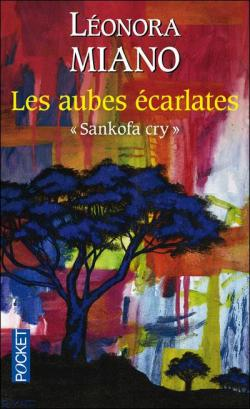
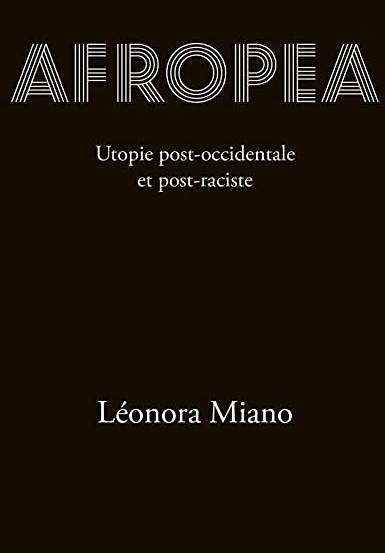
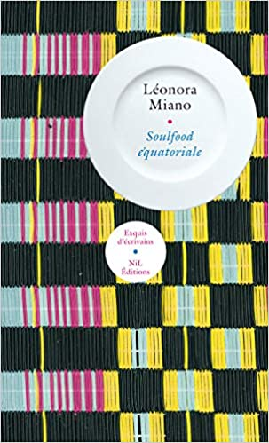
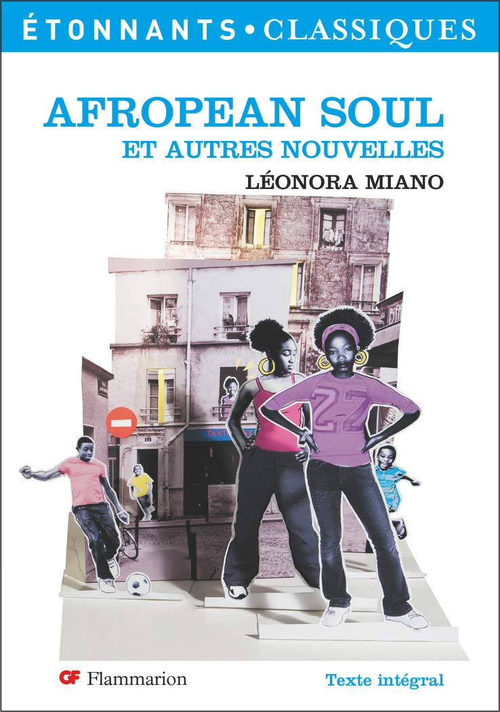
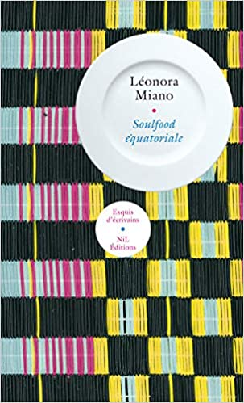
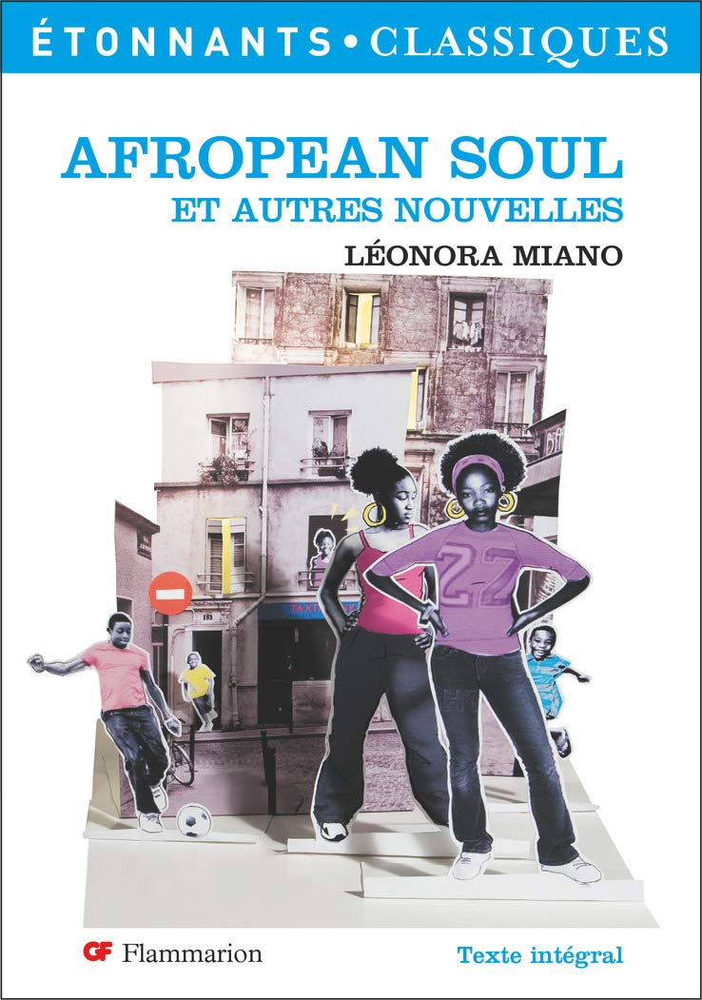

Veja obras da autora francesa.
 A Estação das Sombras,
A Estação das Sombras,
a fez vencedora do Prêmio Fémina 2013 e foi vencedor do Grand Prix du Roman Métis 2013
 Contornos do Dia Que Nasce
Contornos do Dia Que Nasce
vencedor do Prêmio Goncourt 2006 e do Prix de l'Excellence camerounaise 2007
 O Interior da Noite
O Interior da Noite
vencedor do Prêmio Louis Guilloux 2006, Prêmio René Fallet 2006, Prêmio Montalembert 2006 e Prêmio Grinzane Cavour 2008

Les Aubes Écarlates
vencedor do Troféu das artes afro-caribenhas 2010

Afropea
 Rouge impératrice
Dark Heart Of The Night
Rouge impératrice
Dark Heart Of The Night
 Ecrits pour la parole
Ecrits pour la parole
vencedor do Prêmio Seligmann contra o racismo 2012
 Red in Blue (Triologia)
Red in Blue (Triologia)
 Ces Âmes Chagrines
Ces Âmes Chagrines
 L'Impératif Transgressif
Habiter la Frontière
L'Impératif Transgressif
Habiter la Frontière
 Blues pour Elise

Soulfood Équatoriale

Afropean Soul
Marianne Et Le Garçon Noir
Blues pour Elise

Soulfood Équatoriale

Afropean Soul
Marianne Et Le Garçon Noir